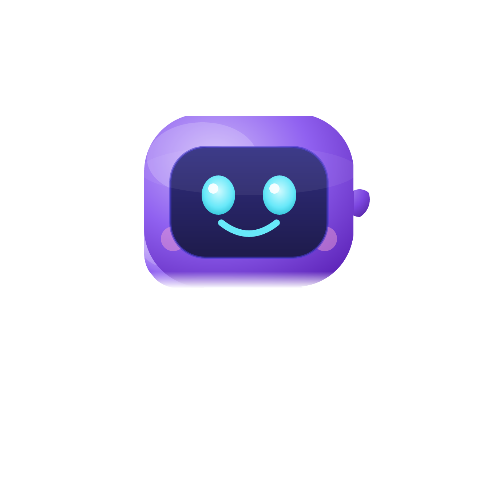
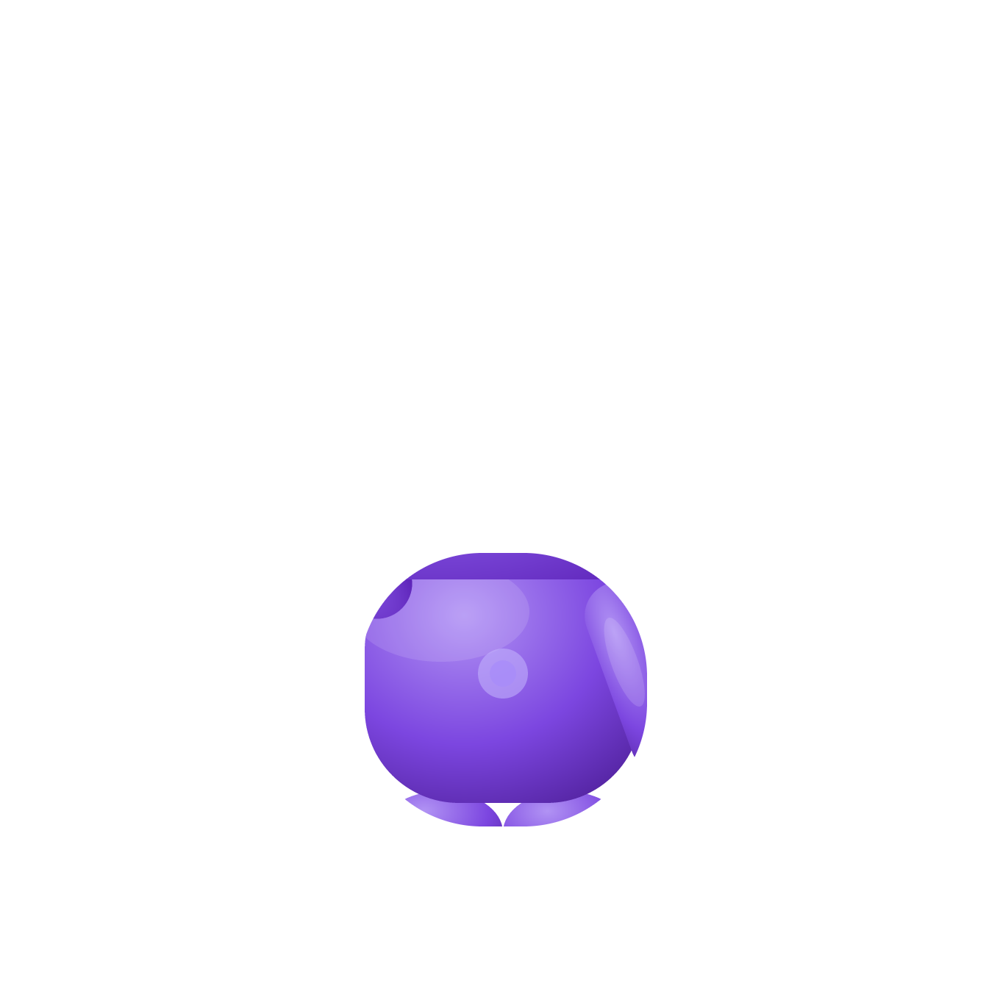
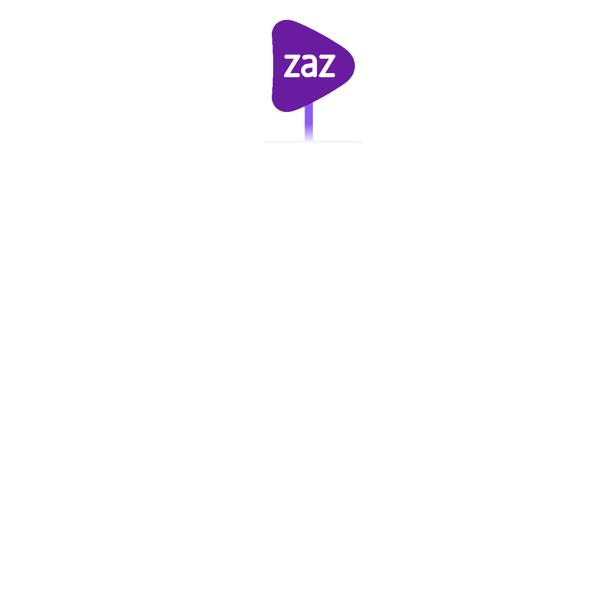

ZAZ Vendas · Versão 1.0
A base visual de tudo que leva o nome ZAZ.
Produtos, apresentações, documentos e páginas partem daqui. A fonte da verdade é
tokens/zaz.tokens.json — CSS, preset Tailwind e componentes React derivam dele.
Como consumir
Três caminhos, do mais leve ao mais integrado. Todos leem os mesmos tokens — a diferença é só quanto de ferramenta você já tem no projeto.
1 · HTML solto — sem build
Apresentação, página avulsa, relatório. Uma linha e pronto.
<link rel="stylesheet"
href="https://zaz-vendas.github.io/Design-System-ZAZ/css/zaz.css">
<body class="zaz-root">class="zaz-root" não é enfeite: é ele que liga fundo, cor de texto, fonte e barra de rolagem. Sem ele o CSS carrega e não faz nada visível.
2 · Tailwind v4
Ganha bg-brand-600, rounded-card, h-control-md como utilitários nativos.
@import "tailwindcss";
@import "@zaz/design-system/tailwind/theme.css";3 · React
Componentes em JS puro, sem JSX e sem etapa de build própria.
npm i github:ZAZ-vendas/Design-System-ZAZ
import "@zaz/design-system/css";
import { Button, Card, StatusBadge } from "@zaz/design-system";Para fixar uma versão, aponte para a tag: #v1.0.0 no fim da URL. Sem isso o npm segue a main, e uma mudança de token entra no seu projeto no próximo npm install sem você pedir.
Regra que vale nos três
Você nunca escreve um hexadecimal. Se precisou de uma cor que não é token, ou o token existe com outro nome, ou o sistema está incompleto — e aí a correção é abrir tokens/zaz.tokens.json, não escrever a cor na sua tela.
Modelos prontos
Nem tudo que leva o nome ZAZ é aplicação. Cada modelo abaixo é um arquivo completo: abra, apague o conteúdo, escreva o seu.
Apresentação
Deck 1920×1080 com os seis layouts, navegação por seta, visão em grade e Ctrl+P gerando PDF em paisagem — um slide por página.
- → espaço avança · ← volta
- G mostra todos os slides · F tela cheia
- O slide atual fica na URL: dá para mandar o link já aberto no slide 4
Aplicação
Shell completo: sidebar com navegação e contadores, header com busca e ações, métricas, lista com trilha lateral e alternador de tema que persiste.
- HTML puro — sem React, sem build, sem instalação
- Tema aplicado antes do primeiro paint, sem piscar branco
- Estado em
aria-current: o CSS lê o mesmo atributo que o leitor de tela anuncia
Cores
O roxo #591da9 é a cor institucional ZAZ. Os neutros vêm todos da escala slate — nenhum cinza fora dela.
Marca
- 600
- Primária: CTA, anel de foco, trilha ativa, ponto "ao vivo". Vale nos dois temas.
- 700
- Hover da primária no tema claro.
- 500
- Hover da primária no tema escuro.
- 50/100
- Fundo de estado ativo, badge de marca, sombra de foco.
Marca como fundo × marca como texto
A regra que mais dá errado quando alguém monta uma tela nova. São dois papéis, não um. No tema claro eles têm o mesmo valor e a distinção parece inútil — ela existe por causa do escuro.
Fundo — --zaz-primary
Continua #591da9 no escuro. Com branco em cima dá 9,7:1.
Texto — --zaz-primary-text
Clareia para #a78bfa no escuro: 6,7:1 contra os 2,7:1 do roxo de fundo.
Alterne o tema (botão no rodapé da navegação) e compare.
Usar o token errado não quebra nada e não estoura teste nenhum — só apaga o texto no tema escuro até ninguém conseguir ler. Foi exatamente o que a auditoria encontrou na primeira versão deste sistema.
Neutros (slate)
Camadas de superfície
Tema claro
Tema escuro
Status
Sempre em trio: fundo + texto + borda. Cor cheia só em ponto, ícone ou barra — nunca como fundo de bloco.
Acentos de área
Cada área do Apolo tem um acento que colore apenas sua pílula no AreaSwitcher. Nunca o corpo da tela.
Marcas parceiras
Estas cores são de identificação interna dentro de produtos ZAZ. Não são a marca do parceiro e não substituem o manual de marca dele.
Regras de uso
Permitido
- Tag ou badge identificando a fila/carteira
- Ponto de legenda e série de gráfico
- Filtro selecionado numa lista de marcas
Proibido
- Fundo de tela, header ou botão
- Capa de slide ou fundo de seção
- Substituir o roxo ZAZ em qualquer estado de foco
Componente
A cor aparece só no ponto; o rótulo fica neutro e em CAIXA ALTA. Isso mantém nove marcas legíveis lado a lado sem virar arco-íris.
Cores de dados
Categórica de 8 posições, usada na ordem — a série 1 é sempre o roxo de marca. Acima de 8 séries, agrupe em "Outros".
Rampa sequencial
Para intensidade, heatmap e mapa: monocromática, sem mistura de matizes.
Em uso
Volume por marca
Tipografia
Inter (300–900) para tudo. JetBrains Mono para IDs de tarefa, CPFs e chaves Camunda.
Display · 4xl / 900 · uma vez por tela
Portal de Tarefas
Título de tela · 2xl / 800
Caixa de Entrada
Título de card · xl / 700
Filtros Avançados
Corpo · sm / 400 · padrão em produto
Gestão inteligente de processos. O corpo padrão é 14px porque o Apolo é um console operacional denso — telas com dezenas de filas visíveis ao mesmo tempo.
Eyebrow · xs / 700 / caixa alta com tracking
Identificação (CPF ou Usuário)
Mono · xs
TSK-8842-CRED · 000.000.000-00
Mínimos por meio
Slide 1920×1080: nunca abaixo de 24px. Documento impresso: 12pt. Alvo de toque em mockup mobile: 44px.
Espaço, raios e sombras
Grade de 4px. Os raios são a assinatura do sistema — errar o raio é o jeito mais rápido de algo não parecer ZAZ.
Raios
| Token | Valor | Onde | Amostra |
|---|---|---|---|
radius-sm | 6px | Checkbox, swatch | |
radius-md | 8px | Chip, miniatura, célula de calendário | |
radius-control | 12px | Botão, input, nav, badge | |
radius-card | 16px | Card padrão — maioria dos contêineres | |
radius-hero | 24px | Card herói e modal. Um por tela | |
radius-pill | ∞ | Avatar, ponto, barra de progresso |
Sombras
sm
Cards, pílulas
md
Popover, dropdown
lg
Modal, drawer
cta
Botão primário — brilho roxo
hero
Única sombra tingida do sistema
Grade de espaçamento
Botões
Title Case sempre. Um primário por área de decisão. hover: -1px e active: scale(0.96) — compacto e tátil, sem bounce.
Formulários
Rótulos explicam o contexto — Identificação (CPF ou Usuário), não Login. O ícone acende antes da borda: é o vocabulário de foco do Apolo.
Use o CPF cadastrado no Camunda.
Por favor, informe sua senha.
Cards e métricas
Branco sobre neutral-50, borda de 1px, shadow-sm. Sem gradiente, sem vidro. A barra roxa de 4×40px marca o título da seção — proposta deste sistema, ainda não presente no Apolo (ver auditoria).
Resultados da Fila
O card com cabeçalho, corpo e rodapé é o contêiner padrão de tela. O rodapé usa fundo bg-muted para separar ação de conteúdo.
Badges e status
10px, peso 700, caixa alta com tracking. O mapa de estado → tom é canônico: use StatusBadge em vez de escolher o tom à mão.
Alertas
Credenciais inválidas
Verifique o CPF e a senha do Camunda.
Integração Tempo Real
Novas tarefas chegam automaticamente a cada 30 segundos.
Tabelas e trilha lateral
A trilha lateral é a assinatura de interação do Apolo: border-left: 4px transparente que vira roxo no hover e no ativo — foco sem trocar o fundo inteiro. Passe o mouse nas linhas.
Tabela
Lista de definição (detalhe de tarefa)
- ID da Tarefa
- TSK-8842-CRED
- Processo
- Credenciamento VERO
- Responsável
- Não atribuída
- Criada
- há 2h 15m
- Grupo
- CSAdquirente
Shell, sidebar e header
Sidebar fixa de 256px, header de 64px, conteúdo com rolagem independente. Seções da sidebar são reordenáveis pelo usuário.
Largura mínima operacional: 960px. Abaixo disso o título do header trunca com elipse e as ações da direita são preservadas.
Modais, drawers e toasts
Modal e drawer usam raio herói de 24px e shadow-lg. Toast leva trilha de 4px na cor do tom — a mesma gramática da lista.
Suspender tarefa?
Tarefa concluída
TSK-8842-CRED foi encaminhada para Acompanhamento.
Pendência registrada
O promotor será notificado por e-mail.
Falha na integração
Sem resposta do Camunda. Nova tentativa em 30s.
Layouts de slide
1920×1080, margem de segurança de 96px, texto nunca abaixo de 24px, no máximo duas cores de fundo por deck. As amostras abaixo estão em escala real, reduzidas.
Conteúdo e voz
Português (pt-BR) sempre; inglês só em código. Tom institucional, claro, educado — nunca casual. Sem emoji, em nenhum lugar.
| Regra | Certo | Errado |
|---|---|---|
| Eyebrow e label | CAIXA ALTA com tracking: SENHA (CAMUNDA) | Caixa alta seca, ou Title Case |
| Botão e navegação | Title Case: Entrar no Sistema | ENTRAR NO SISTEMA |
| Corpo e dica | Sentence case: Gestão inteligente de processos. | Gestão Inteligente De Processos |
| Rótulo de campo | Identificação (CPF ou Usuário) | Login |
| Marca parceira | VERO, SUA LUZ, PLUXEE | Vero, Sua Luz |
| Etapa de processo | Credenciamento, Pendência | CREDENCIAMENTO |
| Acentuação | Pendência, Ambiente Seguro | Pendencia |
| Tempo relativo | há 3 min · há 2h 15m · há 1d 4h | 3 minutos atrás |
| Estado vazio | Nenhuma tarefa encontrada para este filtro. | Nada aqui! |
| Rodapé | © 2026 Zaz Vendas. Apolo. | Copyright 2026 ZAZ VENDAS LTDA |
Assets e ícones
Marca
Altura mínima 24px. Área de respiro igual a metade da altura do logo. Sem sombra, sem contorno, sem rotação.
Divergência de roxo
O arquivo de logo usa #6a1ca0; a interface do Apolo usa #591da9. Mantivemos os dois separados — brand-logo para a marca, brand-600 para UI — até o time de marca decidir qual vale.
Formato: só temos PNG (2190×2430). Um SVG vetorial ainda é desejável para impressão e telas grandes.
Mascote Apolo



Peças separadas (cabeça, corpo, braços, pés, mão, bandeira, sombra) para composição e animação. Uso em acolhimento, estados vazios e erro — nunca em tela operacional densa.
Ícones
lucide exclusivamente, ^0.563.0, via https://esm.sh/lucide-react@^0.563.0. Sem icon font, sem sprite, sem PNG de ícone. Tamanhos 14 / 16 / 18–20, strokeWidth 2.